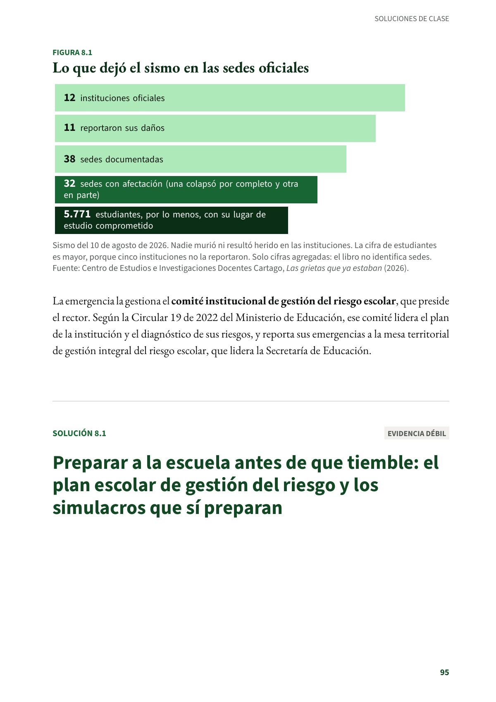
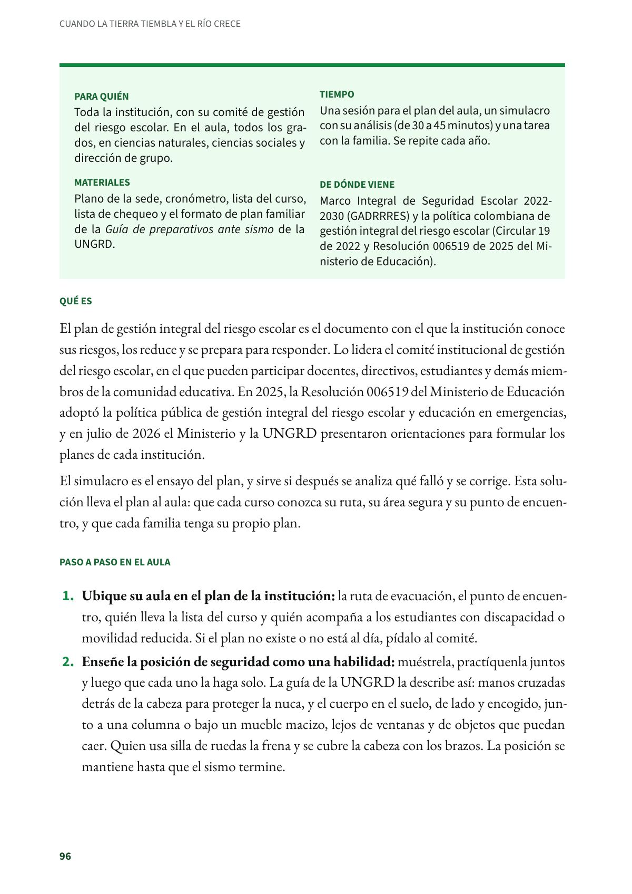
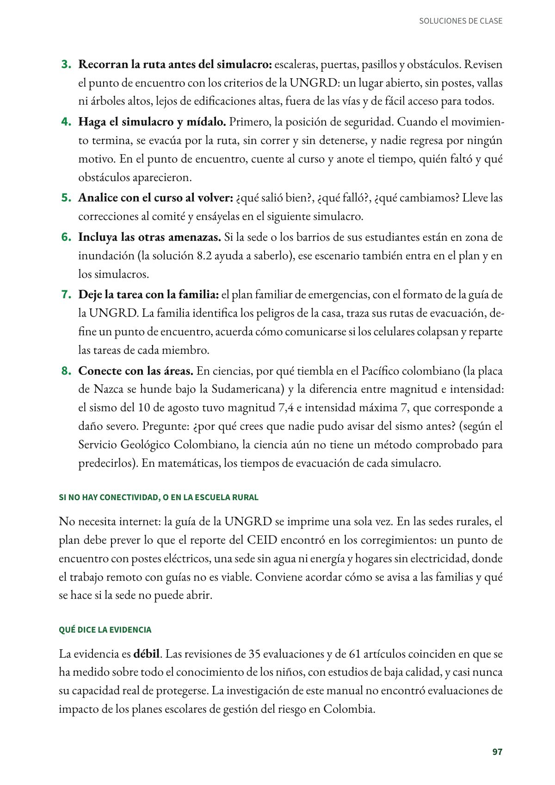
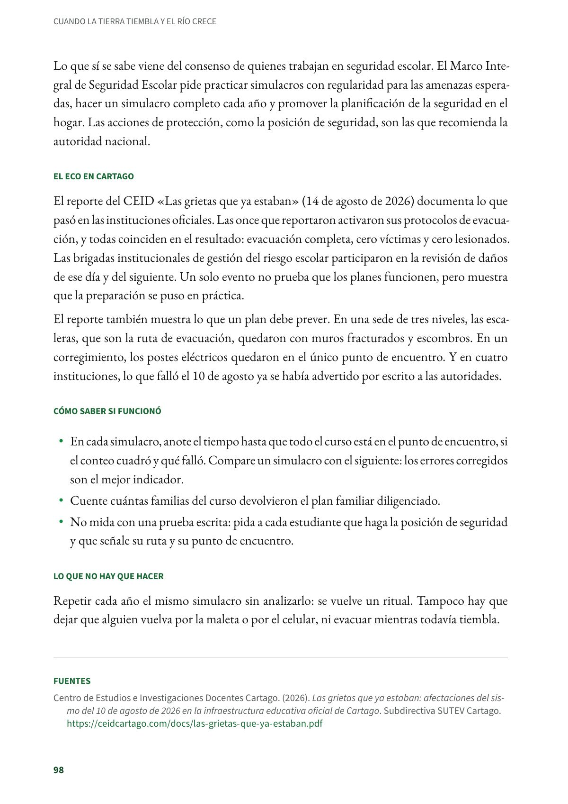

Preparar a la escuela antes de que tiemble: el plan escolar de gestión del riesgo y los simulacros que sí preparan
El plan de gestión integral del riesgo escolar es el documento con el que la institución conoce sus riesgos, los reduce y se prepara para responder. Toda la institución, con su comité de gestión del riesgo escolar. Evidencia débil.
PDF · 5 págs. · 100 KBEn resumen
- Evidencia: débil.
- Para quién: Toda la institución, con su comité de gestión del riesgo escolar. En el aula, todos los grados, en ciencias naturales, ciencias sociales y dirección de grupo.
- Tiempo: Una sesión para el plan del aula, un simulacro con su análisis (de 30 a 45 minutos) y una tarea con la familia. Se repite cada año.
- Materiales: Plano de la sede, cronómetro, lista del curso, lista de chequeo y el formato de plan familiar de la Guía de preparativos ante sismo de la UNGRD.
- De dónde viene: Marco Integral de Seguridad Escolar 2022-2030 (GADRRRES) y la política colombiana de gestión integral del riesgo escolar (Circular 19 de 2022 y Resolución 006519 de 2025 del Ministerio de Educación).
Qué es
El plan de gestión integral del riesgo escolar es el documento con el que la institución conoce sus riesgos, los reduce y se prepara para responder. Lo lidera el comité institucional de gestión del riesgo escolar, en el que pueden participar docentes, directivos, estudiantes y demás miembros de la comunidad educativa. En 2025, la Resolución 006519 del Ministerio de Educación adoptó la política pública de gestión integral del riesgo escolar y educación en emergencias, y en julio de 2026 el Ministerio y la UNGRD presentaron orientaciones para formular los planes de cada institución.
El simulacro es el ensayo del plan, y sirve si después se analiza qué falló y se corrige. Esta solución lleva el plan al aula: que cada curso conozca su ruta, su área segura y su punto de encuentro, y que cada familia tenga su propio plan.
Paso a paso en el aula
- Ubique su aula en el plan de la institución: la ruta de evacuación, el punto de encuentro, quién lleva la lista del curso y quién acompaña a los estudiantes con discapacidad o movilidad reducida. Si el plan no existe o no está al día, pídalo al comité.
- Enseñe la posición de seguridad como una habilidad: muéstrela, practíquenla juntos y luego que cada uno la haga solo. La guía de la UNGRD la describe así: manos cruzadas detrás de la cabeza para proteger la nuca, y el cuerpo en el suelo, de lado y encogido, junto a una columna o bajo un mueble macizo, lejos de ventanas y de objetos que puedan caer. Quien usa silla de ruedas la frena y se cubre la cabeza con los brazos. La posición se mantiene hasta que el sismo termine.
- Recorran la ruta antes del simulacro: escaleras, puertas, pasillos y obstáculos. Revisen el punto de encuentro con los criterios de la UNGRD: un lugar abierto, sin postes, vallas ni árboles altos, lejos de edificaciones altas, fuera de las vías y de fácil acceso para todos.
- Haga el simulacro y mídalo. Primero, la posición de seguridad. Cuando el movimiento termina, se evacúa por la ruta, sin correr y sin detenerse, y nadie regresa por ningún motivo. En el punto de encuentro, cuente al curso y anote el tiempo, quién faltó y qué obstáculos aparecieron.
- Analice con el curso al volver: ¿qué salió bien?, ¿qué falló?, ¿qué cambiamos? Lleve las correcciones al comité y ensáyelas en el siguiente simulacro.
- Incluya las otras amenazas. Si la sede o los barrios de sus estudiantes están en zona de inundación (la solución 8.2 ayuda a saberlo), ese escenario también entra en el plan y en los simulacros.
- Deje la tarea con la familia: el plan familiar de emergencias, con el formato de la guía de la UNGRD. La familia identifica los peligros de la casa, traza sus rutas de evacuación, define un punto de encuentro, acuerda cómo comunicarse si los celulares colapsan y reparte las tareas de cada miembro.
- Conecte con las áreas. En ciencias, por qué tiembla en el Pacífico colombiano (la placa de Nazca se hunde bajo la Sudamericana) y la diferencia entre magnitud e intensidad: el sismo del 10 de agosto tuvo magnitud 7,4 e intensidad máxima 7, que corresponde a daño severo. Pregunte: ¿por qué crees que nadie pudo avisar del sismo antes? (según el Servicio Geológico Colombiano, la ciencia aún no tiene un método comprobado para predecirlos). En matemáticas, los tiempos de evacuación de cada simulacro.
Si no hay conectividad, o en la escuela rural
No necesita internet: la guía de la UNGRD se imprime una sola vez. En las sedes rurales, el plan debe prever lo que el reporte del CEID encontró en los corregimientos: un punto de encuentro con postes eléctricos, una sede sin agua ni energía y hogares sin electricidad, donde el trabajo remoto con guías no es viable. Conviene acordar cómo se avisa a las familias y qué se hace si la sede no puede abrir.
Qué dice la evidencia
La evidencia es débil. Las revisiones de 35 evaluaciones y de 61 artículos coinciden en que se ha medido sobre todo el conocimiento de los niños, con estudios de baja calidad, y casi nunca su capacidad real de protegerse. La investigación de este manual no encontró evaluaciones de impacto de los planes escolares de gestión del riesgo en Colombia.
Lo que sí se sabe viene del consenso de quienes trabajan en seguridad escolar. El Marco Integral de Seguridad Escolar pide practicar simulacros con regularidad para las amenazas esperadas, hacer un simulacro completo cada año y promover la planificación de la seguridad en el hogar. Las acciones de protección, como la posición de seguridad, son las que recomienda la autoridad nacional.
El eco en Cartago
El reporte del CEID «Las grietas que ya estaban» (14 de agosto de 2026) documenta lo que pasó en las instituciones oficiales. Las once que reportaron activaron sus protocolos de evacuación, y todas coinciden en el resultado: evacuación completa, cero víctimas y cero lesionados. Las brigadas institucionales de gestión del riesgo escolar participaron en la revisión de daños de ese día y del siguiente. Un solo evento no prueba que los planes funcionen, pero muestra que la preparación se puso en práctica.
El reporte también muestra lo que un plan debe prever. En una sede de tres niveles, las escaleras, que son la ruta de evacuación, quedaron con muros fracturados y escombros. En un corregimiento, los postes eléctricos quedaron en el único punto de encuentro. Y en cuatro instituciones, lo que falló el 10 de agosto ya se había advertido por escrito a las autoridades.
Cómo saber si funcionó
- En cada simulacro, anote el tiempo hasta que todo el curso está en el punto de encuentro, si el conteo cuadró y qué falló. Compare un simulacro con el siguiente: los errores corregidos son el mejor indicador.
- Cuente cuántas familias del curso devolvieron el plan familiar diligenciado.
- No mida con una prueba escrita: pida a cada estudiante que haga la posición de seguridad y que señale su ruta y su punto de encuentro.
Lo que no hay que hacer
Repetir cada año el mismo simulacro sin analizarlo: se vuelve un ritual. Tampoco hay que dejar que alguien vuelva por la maleta o por el celular, ni evacuar mientras todavía tiembla.
Fuentes
Centro de Estudios e Investigaciones Docentes Cartago. (2026). Las grietas que ya estaban: afectaciones del sismo del 10 de agosto de 2026 en la infraestructura educativa oficial de Cartago. Subdirectiva SUTEV Cartago. ceidcartago.com
Global Alliance for Disaster Risk Reduction and Resilience in the Education Sector. (2022). Marco Integral de Seguridad Escolar 2022-2030: por los derechos de la niñez y la resiliencia en el sector de la educación. gadrrres.net
Johnson, V. A., Ronan, K. R., Johnston, D. M. y Peace, R. (2014). Evaluations of disaster education programs for children: A methodological review. International Journal of Disaster Risk Reduction, 9, 107–123. doi.org
Ministerio de Educación Nacional. (2022). Circular 19: orientaciones para la gestión integral del riesgo escolar (25 de julio). mineducacion.gov.co
Ministerio de Educación Nacional. (2025). Resolución 006519 de 2025, por medio de la cual se adopta el documento técnico con los lineamientos generales de la Política Pública de Gestión Integral del Riesgo Escolar y Educación en Emergencias. Diario Oficial 53.077. sidn.ramajudicial.gov.co
Ministerio de Educación Nacional. (2026, 30 de julio). Nuevas orientaciones permitirán a las secretarías de educación y las escuelas y colegios prepararse para garantizar la educación durante las emergencias. mineducacion.gov.co
Seddighi, H., Sajjadi, H., Yousefzadeh, S., López López, M., Vameghi, M., Rafiey, H. y Khankeh, H. (2022). School-based education programs for preparing children for natural hazards: A systematic review. Disaster Medicine and Public Health Preparedness, 16(3), 1229–1241. doi.org
Unidad Nacional para la Gestión del Riesgo de Desastres. (2024). Guía de preparativos ante sismo. portal.gestiondelriesgo.gov.co
Así se ve en el libro
5 páginas


